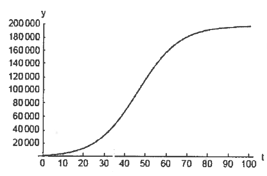

- (a)
- Evaluate and interpret the limit \(\displaystyle \lim _{t \to \infty } N(t)\)
- (b)
- How long will it take for the number of people who have contracted the cold to reach 40,000?
- (c)
- The graph of the function \(N\) on the interval \([0,100]\) is given below. Sketch (as best you
can) the graph of its derivative, \(N'(t)\).

- (d)
- Calculate \(N'(t)\). What does \(N'(t)\) represent?
- (e)
- Evaluate and interpret the limit \(\displaystyle \lim _{t \to \infty } N'(t)\)
- (f)
- Find the average growth rate of the number of people who have contracted the disease during the time interval \([5,6]\) (or during the sixth day after the outbreak).
- (g)
- Find the instantaneous growth rate of the number of people who have contracted the disease for \(t=5\) (round to a whole number).